Original Small A / Large B / Ruko B / Warung C preserved. 11 separate illustrated layers. Contract d5830d7. The masters expose measured mismatch rather than stretching artwork. No production manifest changed.
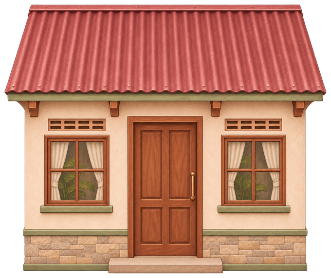
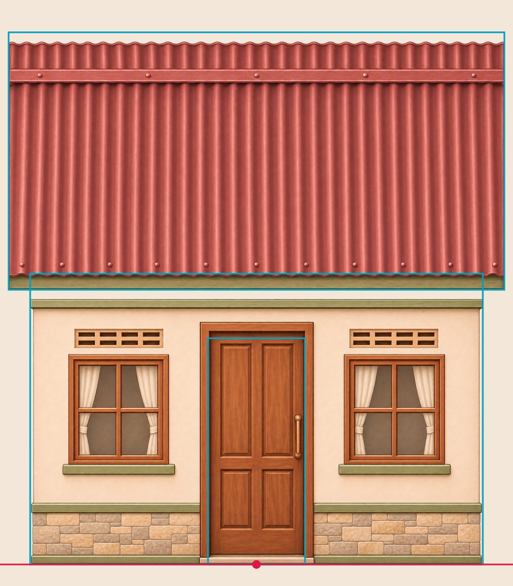
Cyan = exact contract facade, opening and roof envelope; red = ground pivot. Visible gaps are defects, not approved exceptions. Layer assembly uses contract offsets; no image stretching.
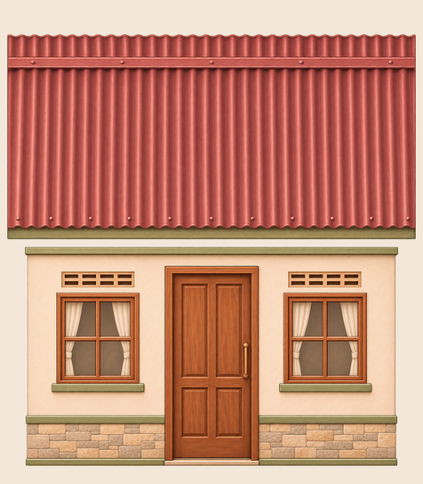
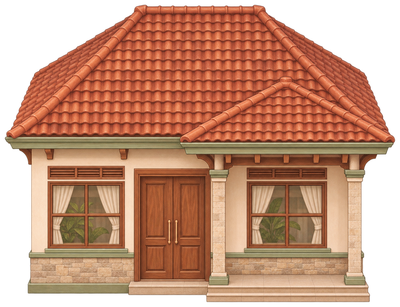
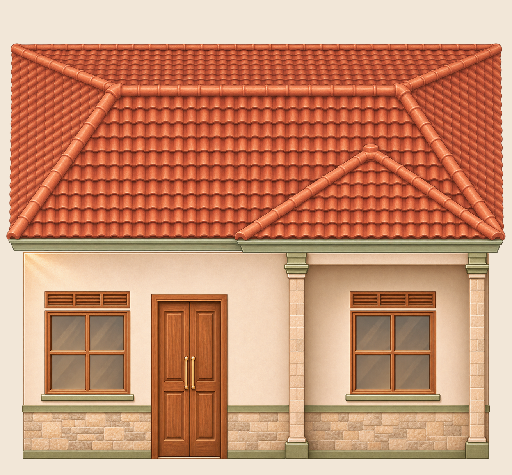
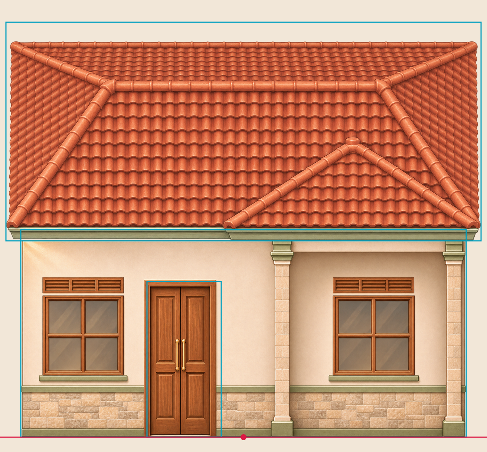
Cyan = exact contract facade, opening and roof envelope; red = ground pivot. Visible gaps are defects, not approved exceptions. Layer assembly uses contract offsets; no image stretching.
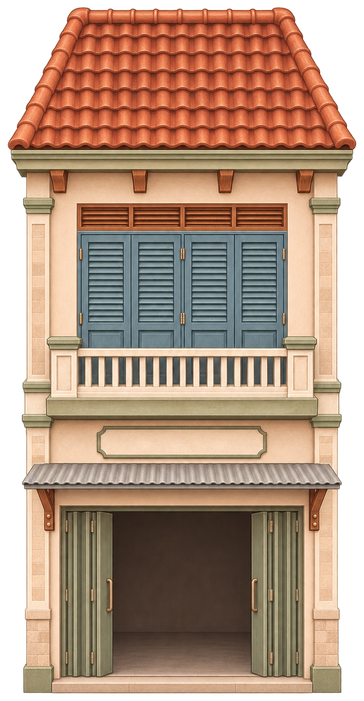
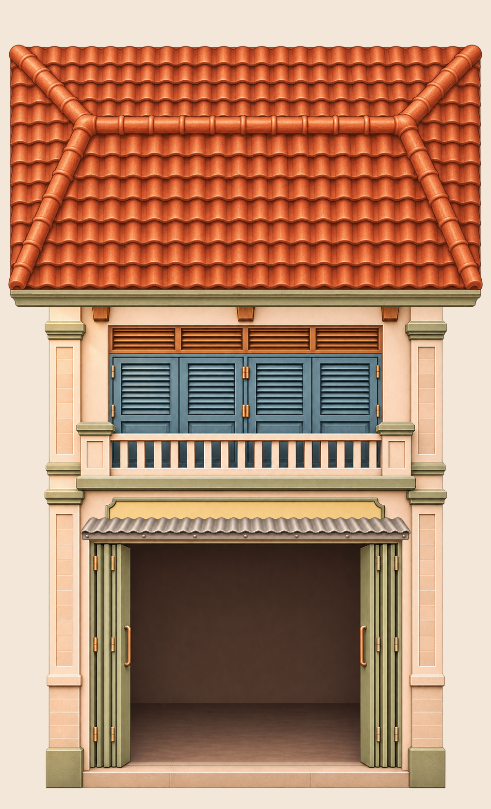
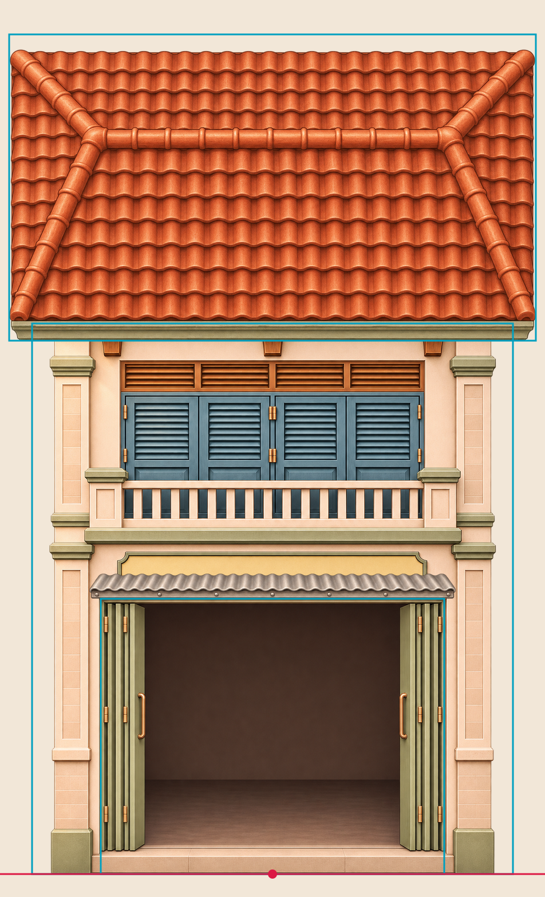
Cyan = exact contract facade, opening and roof envelope; red = ground pivot. Visible gaps are defects, not approved exceptions. Layer assembly uses contract offsets; no image stretching.
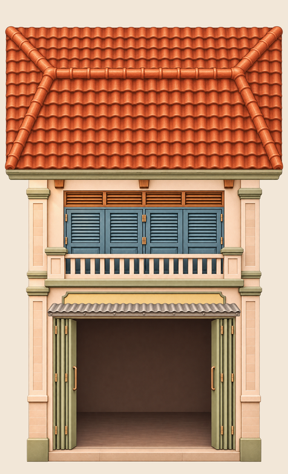
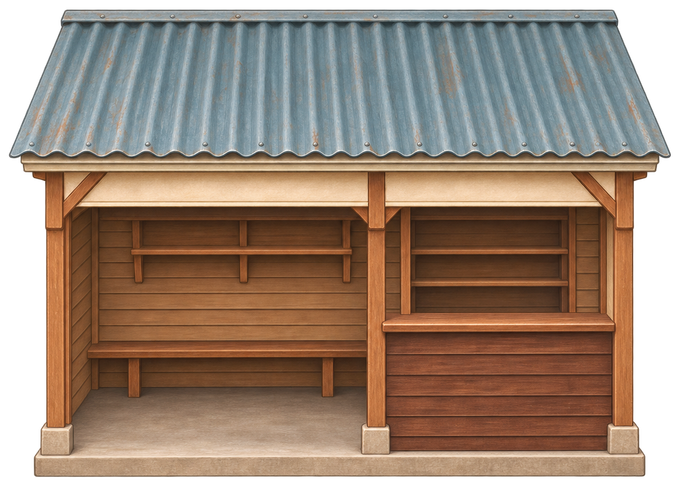
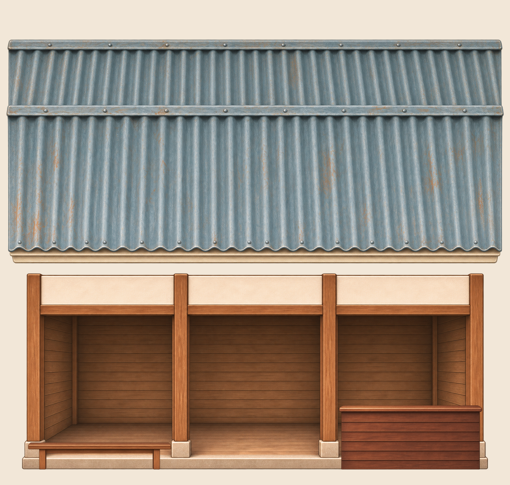
Cyan = exact contract facade, opening and roof envelope; red = ground pivot. Visible gaps are defects, not approved exceptions. Layer assembly uses contract offsets; no image stretching.
| Asset | Width delta | Height delta | Native px/cm width |
|---|---|---|---|
| world_house_small | 0 | -23 | 3.46 |
| world_house_small_roof | 0 | -8.5 | 3.64 |
| world_house_large | 0 | -13.5 | 2.90 |
| world_house_large_roof | 0 | -25.5 | 2.66 |
| world_ruko | -29.5 | 0 | 2.53 |
| world_ruko_roof | 0 | -13 | 3.40 |
| world_warkop_open | 0 | -27.5 | 2.90 |
| world_warkop_roof | 0 | -20.5 | 2.66 |
| world_ruko_awning | 0 | -8 | 3.87 |
| world_warkop_counter | 0 | -12.5 | 9.05 |
| world_warkop_bench | 0 | -10 | 11.43 |
Browser-only candidate registration; no approval and no integration committed. Android screenshots are emulation, not physical A05 tests. See browser-fixture.json and desktop/android PNGs.